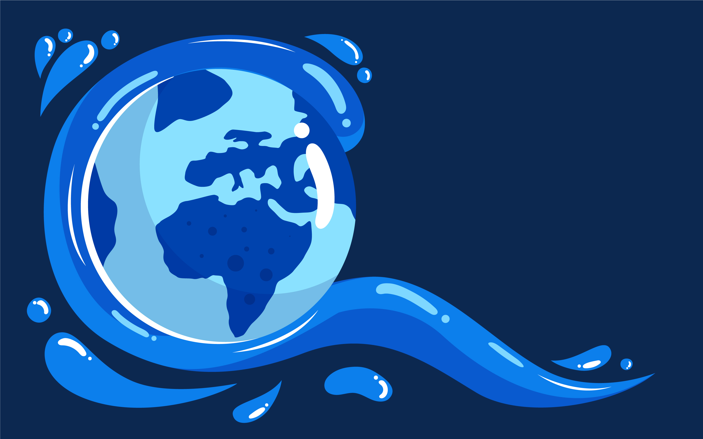
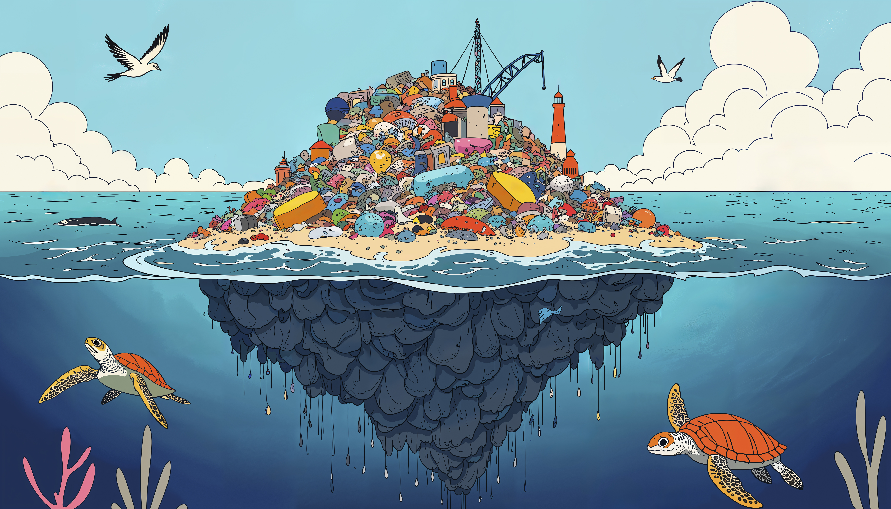
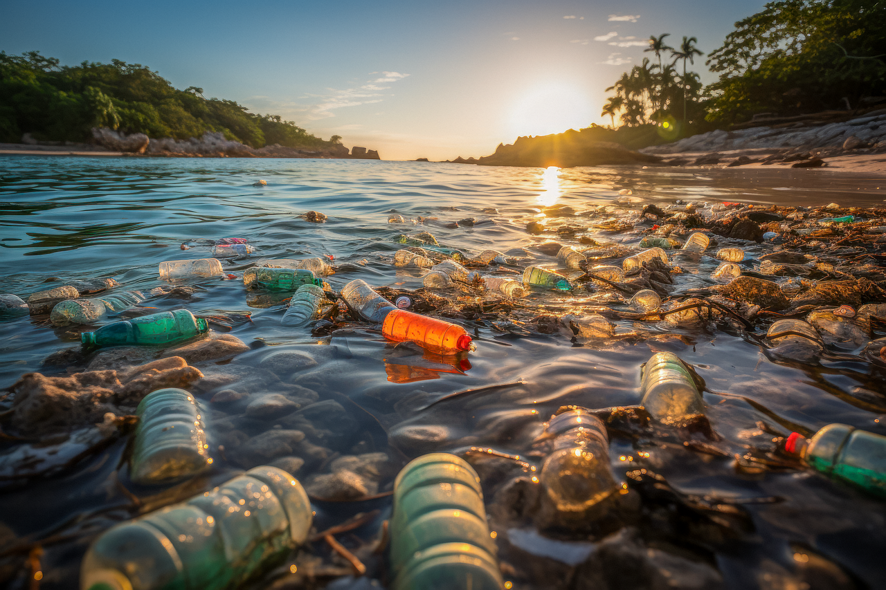

ALERTA AZUL
Das suas mãos ao mar: todo o lixo que produzimos encontra o caminho para os oceanos. Entenda o ciclo de contaminação, o impacto nas mudanças climáticas e como você pode ser parte da solução.

Das suas mãos ao mar: todo o lixo que produzimos encontra o caminho para os oceanos. Entenda o ciclo de contaminação, o impacto nas mudanças climáticas e como você pode ser parte da solução.

E 71% dele está contaminado. Conheça a origem da poluição plástica, os dados alarmantes sobre a contaminação e projetos de ciência que lutam para despoluir nosso maior recurso.

Os microplásticos são partículas com menos de 5 milímetros, invisíveis a olho nu, mas presentes em praticamente todo o ambiente aquático. Eles não são apenas resultado da fragmentação de garrafas e embalagens jogadas nas praias; grande parte vem da lavagem de roupas sintéticas, da abrasão de pneus e de produtos de higiene, atingindo rios e oceanos de forma silenciosa.
Uma vez na água, essas partículas são ingeridas por peixes e outros organismos, entrando na cadeia alimentar. Estudos mostram que os microplásticos, além de tóxicos, podem liberar produtos químicos perigosos no ecossistema e em nossos corpos, tornando-se um dos maiores desafios para a saúde do Planeta Água.
Saiba MaisDe plástico entram nos oceanos anualmente
Essa quantidade massiva de plástico não só polui, mas também ameaça a vida marinha e os ecossistemas oceânicos.
De animais marinhos por poluição plástica
Desde pequenos plânctons até grandes mamíferos, a cadeia alimentar é gravemente impactada.
Da água potável contaminada com microplásticos
Microplásticos são encontrados em praticamente todas as fontes de água, afetando nossa saúde de formas ainda desconhecidas.
Para um plástico se decompor no oceano
O plástico que descartamos hoje permanecerá no ambiente por muitas gerações futuras.
Conheça as principais origens dos Microplásticos Primários liberados anualmente no ambiente marinho. (Fonte: Adaptação de estudos do Parlamento Europeu)
Conclusão Rápida: Ações cotidianas como a lavagem de roupas sintéticas e o trânsito são responsáveis pela maior parte da poluição, destacando a necessidade de soluções de filtragem urbana e doméstica.

Iniciativa brasileira focada na monitorização e caracterização da poluição por microplásticos no Atlântico Sul. Transforma dados brutos em conhecimento essencial para a conservação marinha.
Saber MaisPlataforma tecnológica escalável que desenvolve soluções de engenharia, como barreiras automatizadas, para a coleta de lixo flutuante em rios e reservatórios.
Saber MaisVisão completa do desempenho de materiais, focada em manter produtos e materiais em uso pelo maior tempo possível. Reduz drasticamente o descarte que atinge os oceanos.
Entenda o CicloAumente a visibilidade de alternativas sustentáveis e gere menos lixo. Pequenas mudanças nas suas escolhas diárias têm um impacto direto e imediato na preservação do Planeta Água.
VEJA DICAS